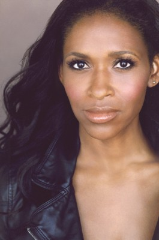

#4204 L!fe Happens - Das Leben eben!
Alternativ: Life Happens

 IMDB-Wertung: 5.6 / 10
IMDB-Wertung: 5.6 / 10  Metascore: 0
Metascore: 0 
Kim genießt mit ihren beiden Mitbewohnerinnen Laura und Deena das Nachtleben von Los Angeles. Die drei Freundinnen nutzen ihre Schönheit und Jugend aus, um wilde Partynächte zu feiern und zahlreiche One-Night-Stands zu erleben. Nach einer intimen Nacht wird Kim jedoch unbeabsichtigt schwanger. Das bringt sowohl ihr Leben als auch das ihrer Freundinnen aus dem Gleichgewicht. Gemeinsam versuchen sie, die Normalität zu wahren und das Kind als alleinerziehende Mütter großzuziehen, was aber nur mäßig erfolgreich funktioniert. Als Kim schließlich auf den attraktiven Nicolas trifft und sich von ihm angezogen fühlt, beschließt sie, ihm die Existenz des Kindes zu verschweigen. Doch auch das bringt unangenehme Konsequenzen und neue Probleme.
Jahr: 2011
Dauer: 100 Minuten
FSK: 12
Land: USA Studio: PMK*BNCTonspuren: DTS - ,
Untertitel:
Auflösung: 1080p (1920x800) Größe: 9164 MB
Genre: Komödie
Regisseur: Kat Coiro
Drehbuch: Milos Forman
Soundtrack:
Darsteller:
 Krysten Ritter als Kim
Krysten Ritter als Kim Kate Bosworth als Deena
Kate Bosworth als Deena Rachel Bilson als Laura
Rachel Bilson als Laura Geoff Stults als Nicholas
Geoff Stults als Nicholas Justin Kirk als Henri
Justin Kirk als Henri- Fallon Goodson als Jayde
 Andrea Savage als Patti
Andrea Savage als Patti Kristen Johnston als Francesca
Kristen Johnston als Francesca Rhys Coiro als Marc
Rhys Coiro als Marc Jason Biggs als Sergei
Jason Biggs als Sergei Seymour Cassel als Pop Pop
Seymour Cassel als Pop Pop- Louis Silvers als Barry Robert Philips
 Colin Egglesfield als Ivan #1
Colin Egglesfield als Ivan #1- Ivan Shaw als Ivan #2
- Jenny Mollen als Rita the Receptionist
- Abby Brammell als Shiva the Yoga Teacher
 Marguerite Moreau als Pauline
Marguerite Moreau als Pauline- Lauren Conrad als Lauren Conrad
- Katie Morgan als Dr. Katie
- Nic Novicki als Nurse Nic
-  Merrin Dungey als Hester
- Laura Silverman als Ms. Crenshaw
- Devan Leos als Billy
- Cody Benjamin Lee als Alternative Teen 1
- Brody Nicholas Lee als Alternative Teen 2
- Bruce Robert Cole als Bob the Broker
- Shelby Janes als Diner Waitress
 Jon Heder als Wrong Number Caller
Jon Heder als Wrong Number Caller- Milana Vayntrub als Jayde's Friend Tanya
- Brandon Quinn als Hot Jogger #2
- Alex Essoe als Girl in Waiting Room
- Riley St. John als Yoga Toddler
- Carissa Blades als Allison , uncredited
- Norman Matthew Kim als Diner Customer , uncredited
- Ricki Lander als Wanda the Waitress , uncredited
- Karin Lee als Allison's Friend , uncredited
- Allie McCulloch als Pregnant Woman , uncredited
- David J. Phillips als Brock , uncredited
- Zachary Ross als Baby Max
- Connor Ross als Baby Max
- Tesla Allgood als Baby J.J.J.
- Jevin Rae Udcoff als J.J.J. at 1 Year
- Jem Walrath als Max at 1 Year
- Darrel Davenport als Hot Jogger #1
- Marghi Coiro als Laughing Toddler
- Henry Nilsen Healy als Boy Toddler
- Faye Walrath als Yoga Toddler
- Edith Jefferson als Elderly Woman
- Claire Wood als Reality Show Crew
- Carlton Diggs als Reality Show Boom Op , uncredited
Datei: X:\2011(G-M)\L!fe Happens - Das Leben eben! (2011, FSK12, 1920x800).mkv seit 29.07.2016
Festplatte: HD 2011(G-Z)
 Es gibt insgesamt 100 Filme in der Gruppe '2011(G-M)'
Es gibt insgesamt 100 Filme in der Gruppe '2011(G-M)'